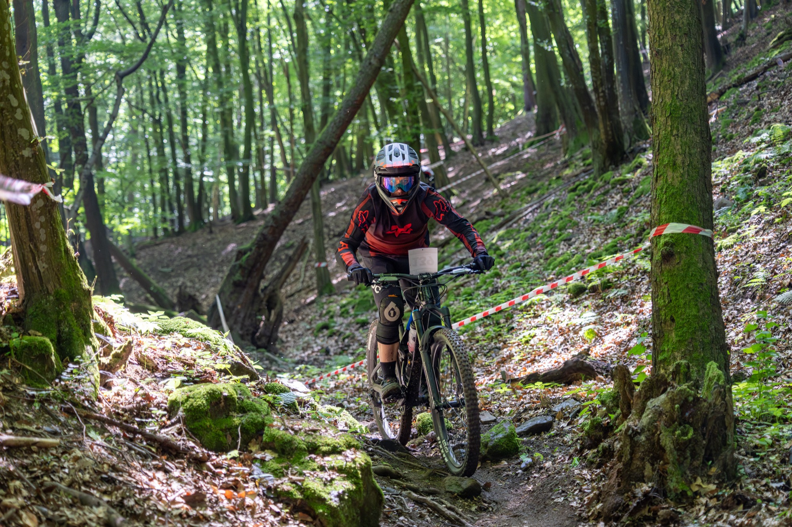
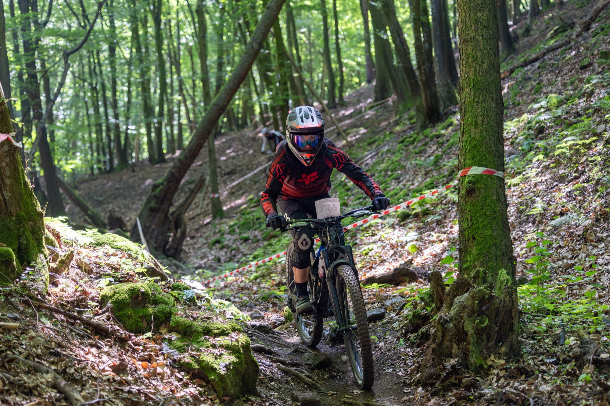
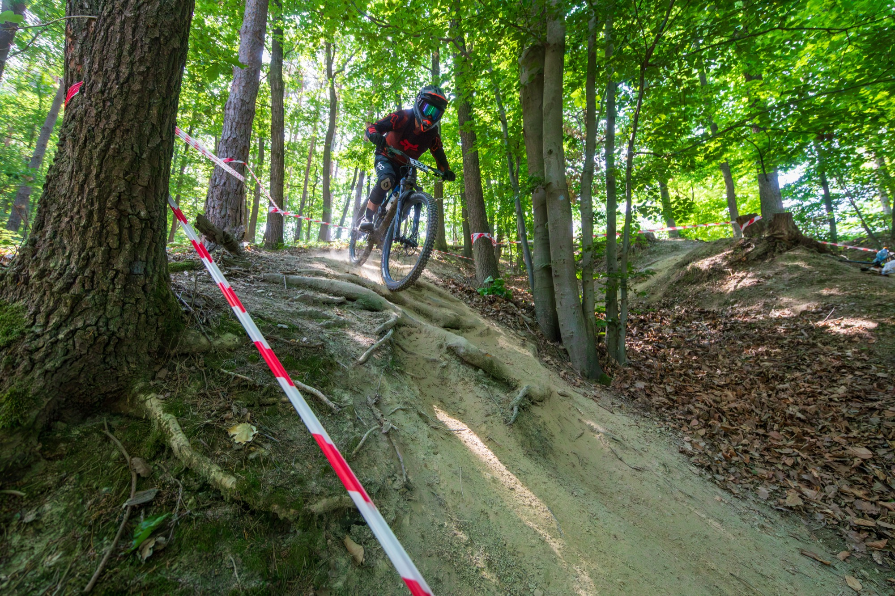
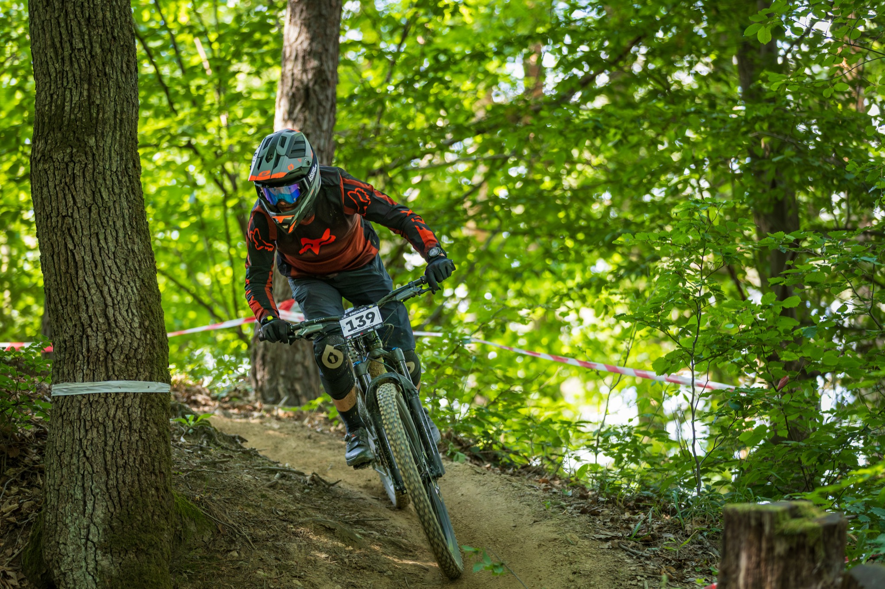
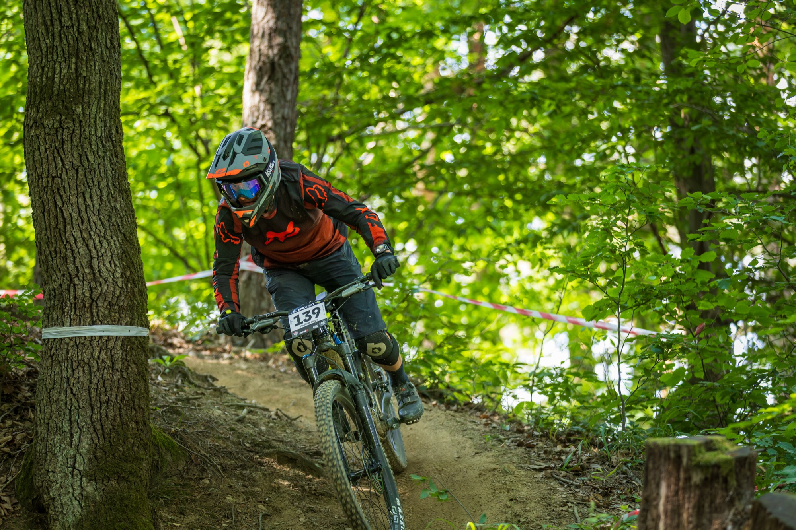
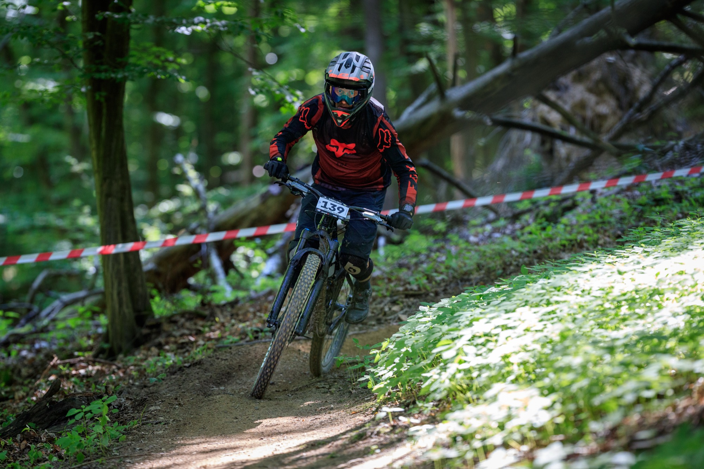
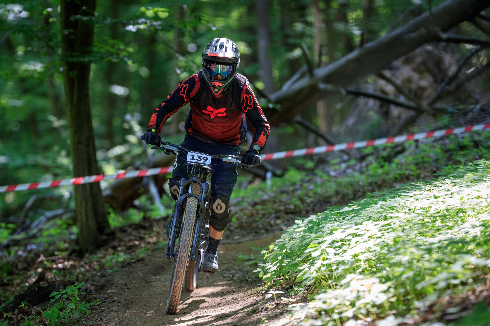
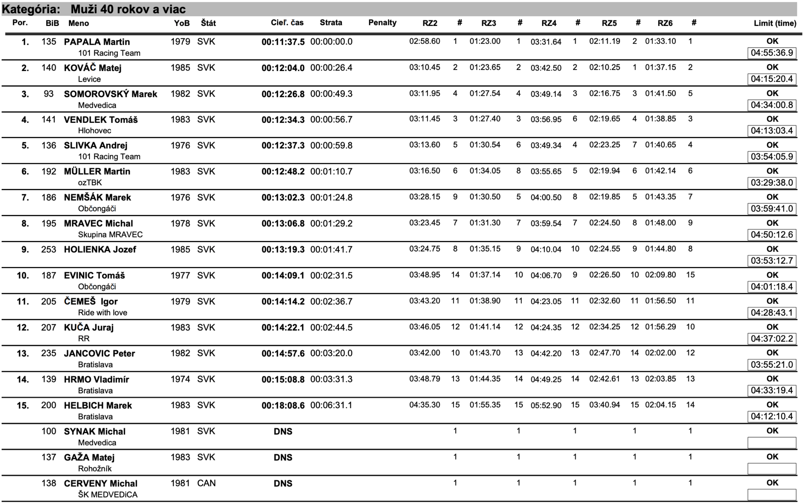

Štvrtok 30.5.2025 — Tohtoročné trate boli rovnaké ako minulý rok. V rámci tréningu som si prešiel iba RS3, RS5 a RS6 na požičaných bicykloch. RS3 som si prešiel na Marine Alpine trail. Bicykel je kratší ako som zvyknutý a tak by mal byť obratnejší. Bol však osadený lacnými komponentmi (vpredu Yari, vzadu neviem) a bola to taká skákavá koza, ale RS som zvládol.
Na RS5 a RS6 som sa vydal na e-bikoch Superior iXF 9.7 a Trek Fuel Exe 9.8 GX AXS. Superior bol osadný ľahkým Bosch Performance Line SX motorom a Trek tiež ľahkým motorom TQ. Subjektívne bol lepším Superior s Bosch motorom. TQ motor po prestaní šliapania viditeľne spomaľoval a do kopca bol Boch jednoznačne lepším resp. silnejším motorom. Obe RS som si prešiel v miernom tempe a osviežil si ich v pamäti.
Na konci dňa som mal ešte zapožičaný trailový Sunn SHAMANN DC S1 od francúzskeho výrobcu. Bicykel je nádherný a veľmi príjemný na jazdenie, zrejme však nie na Enduro trate. A hoci je krásny, lepšou voľbou by bol zrejme hard-tail na menej náročné jazdenie. Večer sme sa presunuli na ubytko do Penziónu Kúria v Novom Meste na Váhom. V meste nás prekvapil krásny zrekonštruovaný Kostol Narodenia Panny Márie s nádhernou štukovou výzdobou a krásnym námestím slobody s reštauráciami a terasami pre posedenie.
31.5.2025 — V sobotu som štartoval o 10:15. Počasie počas tréningu v piatok bolo ideálne, v sobotu už prišli vysoké teploty. Našťastie v lese to nebolo až tak veľmi cítiť a trate neboli ani príliš suché, ani mokré. Premiéru mal nový 29'' Mondraker Superfoxy a očakával som lepší výsledok vďaka väčším kolesám a lepšej prejazdnosti.
Všetky RS som išiel v subjektívne dobrom tempe a veľmi plynulo bez pádu. Iba v RS6 som sa v jednej zákrute pošmykol a spadol na bok, kde som stratil pár sekúnd, ale zbytok RS som prešiel v plynulom tempe. Takisto som nemal žiadne problémy s kŕčmi ako minulé roky aj keď na transfere na poslednú RS som už mlel z posledného. O to väčšie bolo moje sklamanie z výsledného času a umiestnenia. Časy boli síce rýchlejšie ako minulý rok keď boli trate mokré po daždi, ale nedosahovali úrovne tých z roku 2023.
Fotky z preteku











Hobby Challenge 40+
